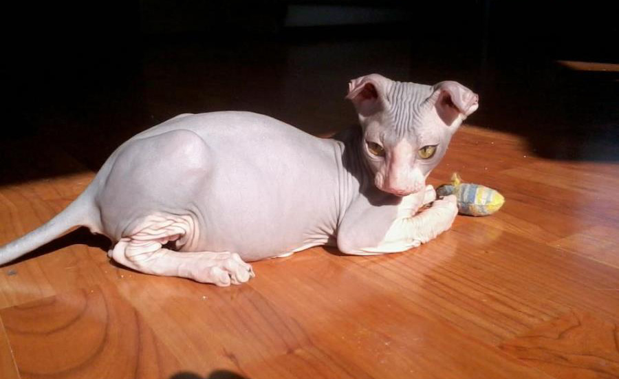

 Вислоухие и бесшерстные котята породы украинский левкой получились благодаря труду Бирюковой Елены – фелинолога из города Киева и владелицы питомника «Lada cats». украинский левкой История породы Оригинальные кошки породы украинский левкой были выведены совсем недавно. Свое начало необычная порода берет в 2000 году. Свое название порода получила благодаря необычной форме ушей, которая напоминает цветок левкой, и стране происхождения – Украине. Несмотря на достаточно недавнее существование породы, украинские левкои успели полюбиться многим людям не только в Украине, но и далеко за ее пределами. Описание породы. Внешний вид. Окрасы Голова угловатая, плоская и длинная, имеющая среднюю величину. Уши широко поставлены, у фолдов – округло загнутые, а у страйтов – выпрямлены. Относительно размеров головы уши достаточно большие. Глаза большие, миндалевидной формы. Цвет глаз может быть любым, но предпочтение отдают кошкам, имеющим голубые или зеленые. Шея украинского левкоя средней длины, мускулистая. Тело имеет хорошо развитую мускулатуру, коротковатое, грудь неширокая. Кошки породы украинский левкой гораздо меньше, чем коты. Конечности длинные, крепкие, лапки овальные с изящными пальчиками. Хвост длинный, очень гибкий, сужающийся к кончику. Кожа горячая на ощупь, складчатая. Предпочтение отдаётся бесшерстным представителям породы, но возможно наличие равномерного пушка по всему телу животного. В рамках стандарта кошки могут быть абсолютно различных окрасов . Средний вес кошки составляет 5 кг.